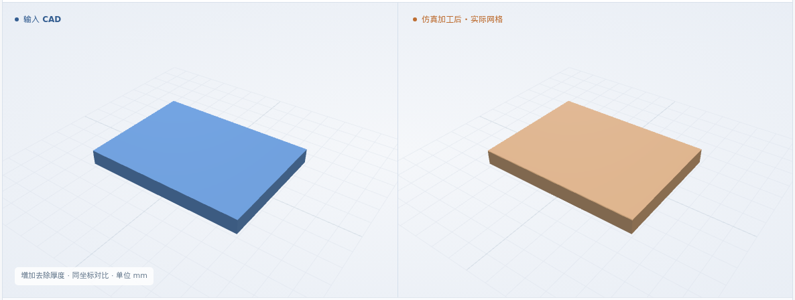
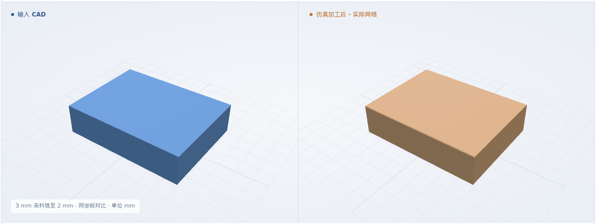
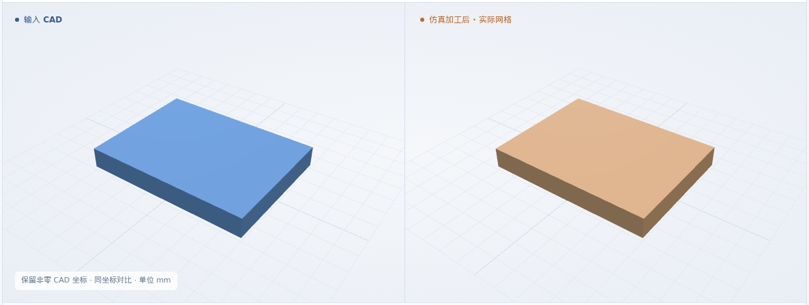
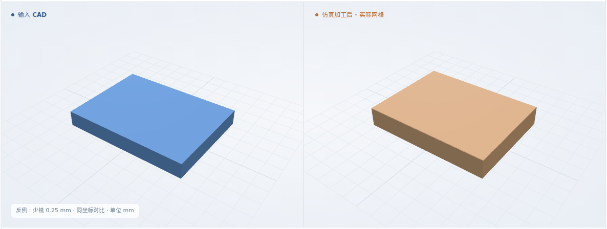
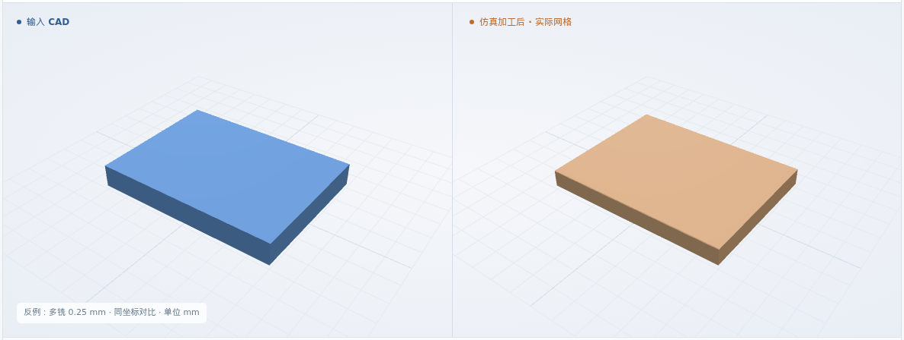
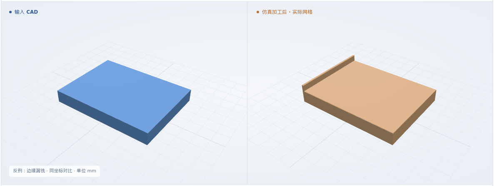

面铣减薄
来料厚 1.5 → 成品厚 1 mm · 目标顶面 Z-0.5
最终网格 0.025 mm
体积 IoU99.9697%
本次新增：来料与目标 CAD 分开定义 · 原生 MillFace 分层面铣 · 顶面位置、厚度与漏铣检查
体积 IoU = 原 CAD 与实际剩料的交集 / 并集
来料厚 1.5 → 成品厚 1 mm · 目标顶面 Z-0.5
最终网格 0.025 mm
来料厚 1.5 → 成品厚 0.75 mm · 目标顶面 Z-0.75
最终网格 0.025 mm

来料厚 3 → 成品厚 2 mm · 目标顶面 Z-1
最终网格 0.04 mm

来料厚 1.5 → 成品厚 1 mm · 目标顶面 Z0.5
最终网格 0.025 mm

8 × 6 mm 矩形来料 · 厚 1.5 / 3 mm · 通用 XYZ · φ1 平底铣刀 · 6061-T6 标签。四个合成用例，保留原 CAD 坐标；整张真实工艺卡尚未验证。
毛坯 → 早期去料 → 分层加工 → 接近完成 → 完成
三维回放暂不可用；上方实际图片和形状下载仍可查看。
来料厚 1.5 mm，铣至 1.0 mm；其余用例复用这三个模块
工艺卡 PDF + 核对录入 + CAD + 要求 + 资源
结构化工艺卡 · PDF 同步存档↓输出分别核对来料与目标 CAD；检查卡片厚度、定位基面、刀具和安全高度。缺项或冲突则停止。
准备检查通过 ↗重读原 CAD 确认顶面；核对毛坯尺寸、每层覆盖、切深与进给，不能用成品外形代替来料。
NC 与方案一致 ↗执行同一 NC；与原 CAD 比 IoU，再检查剩余厚度、顶面高度、漏铣及外形 / 底面保留。
几何比对与测量 ↗顶面高度、厚度、顶面采样高差及外形偏差按各例冻结的软件条件判断：允许量为 4 个网格步长，数值保护带为 2 个网格步长。25 个顶面 / 厚度探测点、11 个外形截面，另检查整个网格的最高点以发现边缘漏铣。
软件条件 ↗ · 完整结果 ↗制造验收依据仍待补齐；粗糙度、真实装夹和材料物理尚未验证。
错误 NC 均被正常入口拒绝。专用反例实际去料后，少铣 / 多铣由厚度和高度检出；边缘漏铣即使 IoU 较高，顶面高度检查仍失败。
仅修改 P1 的 NC；仍与原 CAD 比较
最终网格 0.025 mm

仅修改 P1 的 NC；仍与原 CAD 比较
最终网格 0.025 mm

仅修改 P1 的 NC；仍与原 CAD 比较
最终网格 0.025 mm

四例 IoU、CAD 对比与实际回放，另有四个几何反例。